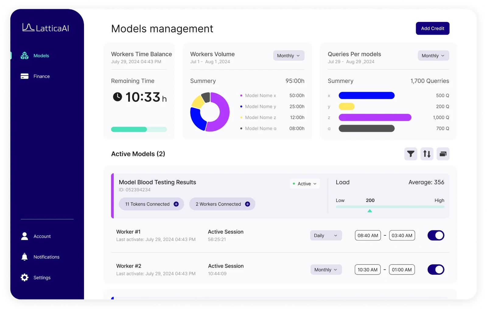
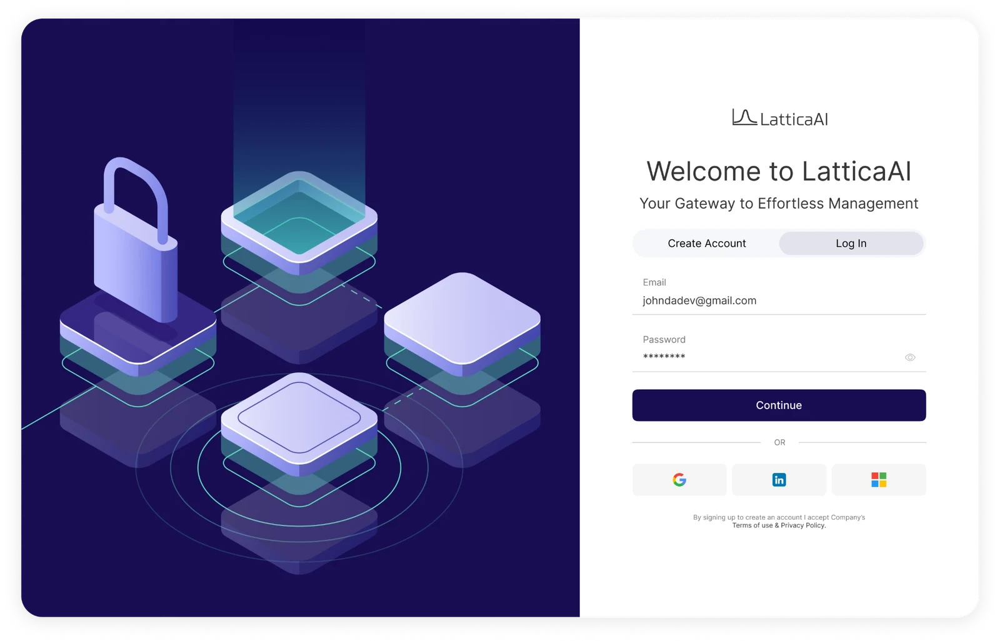
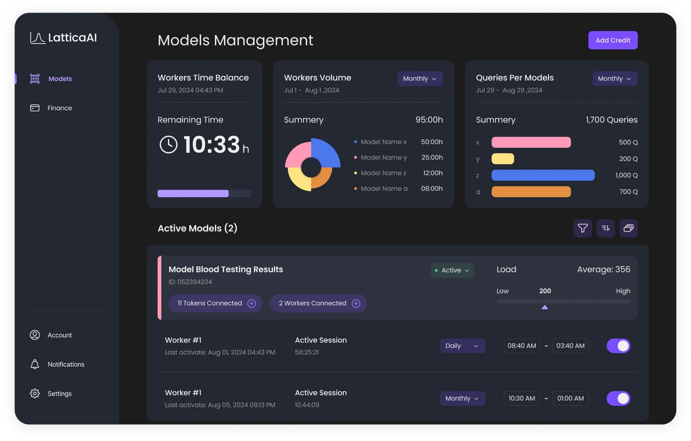
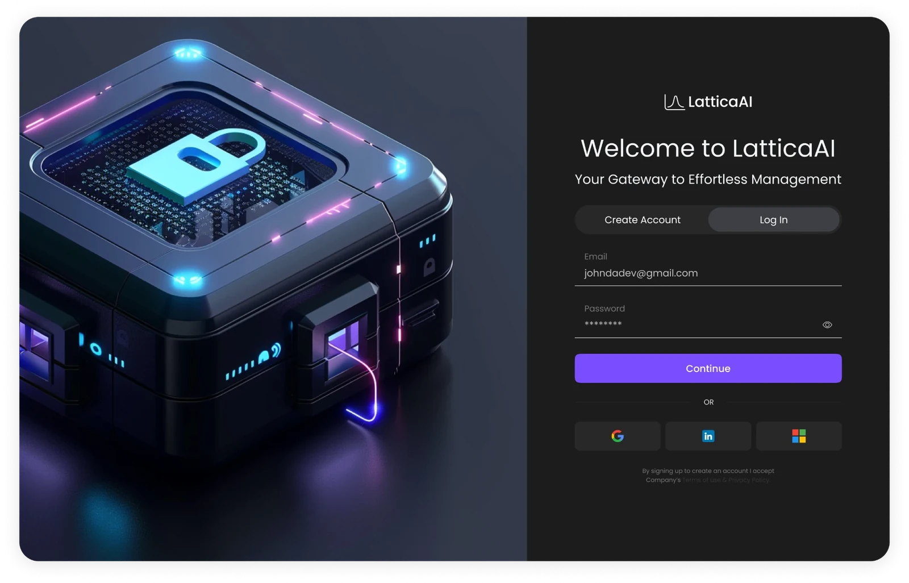
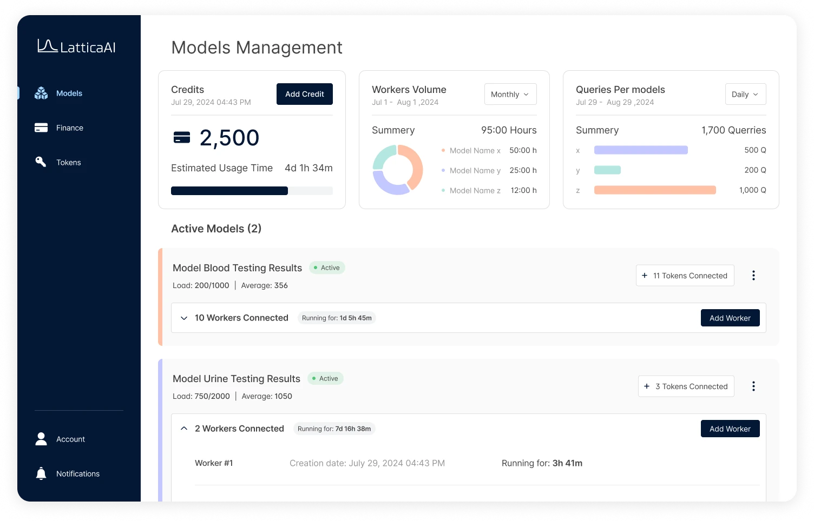
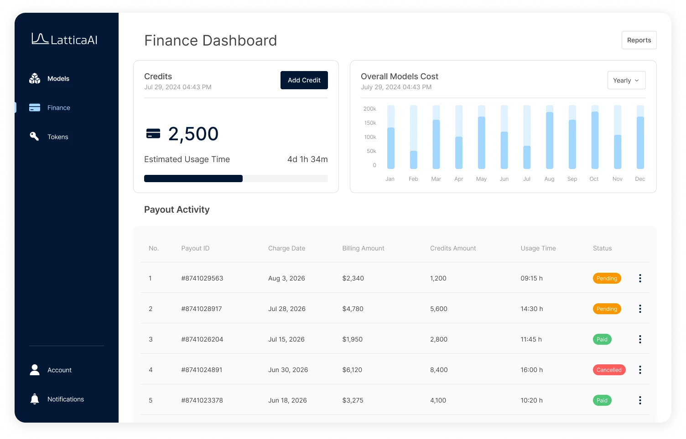
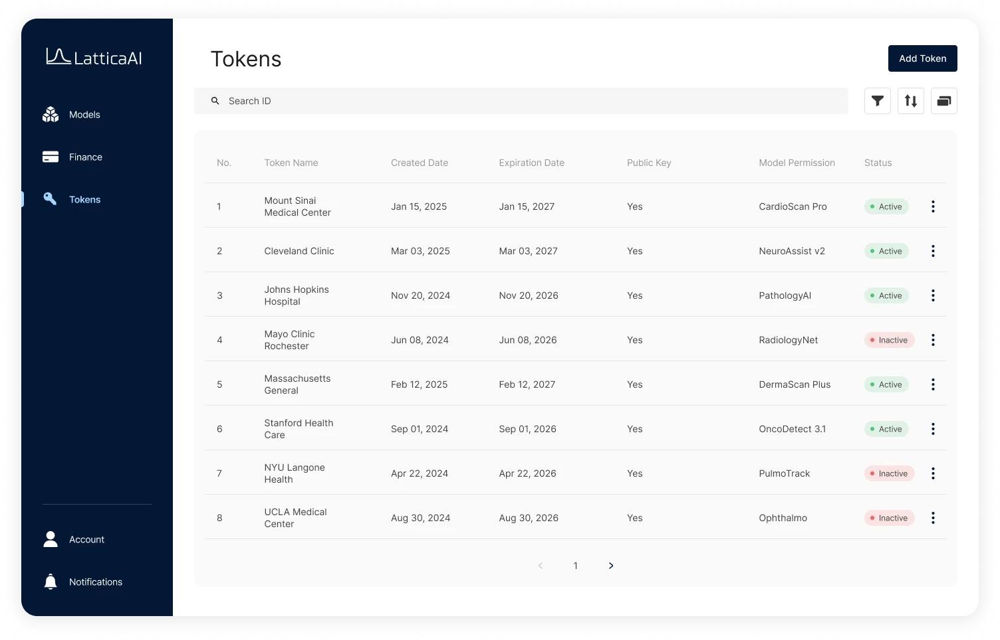
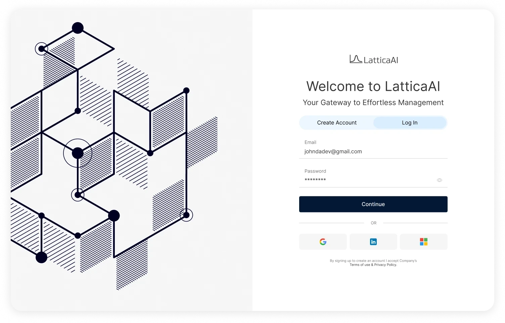

Lattica
Zero to One
Two products built from scratch for a startup running AI on fully encrypted data: a dashboard for clients, and a live demo that makes invisible technology tangible.

About
Lattica builds AI infrastructure using Fully Homomorphic Encryption: data stays encrypted even while AI models process it, so companies in healthcare, finance and other sensitive fields can use AI without exposing their data.
We built two products for them:
- Dashboard for clients ("workload providers") who deploy and manage their AI models on the platform.
- Demo for website visitors, letting anyone try encrypted AI live, such as digit recognition or sentiment analysis, before committing.
The challenge
We built both products from scratch, with no guidelines from the client, no prior familiarity with the domain, and only one competitor to refer to. Based only on what the client told us, we had to understand what the product actually was and how to build it so it would serve its users best.
Convey, as realistically as possible, how the technology actually works, inside the demo.
Early directions
Two directions went to the client: a light one with deep indigo and saturated accents, and a dark one with pastel accents. They asked for a mix of the two, and found both palettes a little loud, so the final design softens the colours.




The dashboard
Clients manage everything from three areas: Models, where they watch each model’s load, workers and connected tokens; Finance, for credits, costs and payouts; and Tokens, for the access keys they hand out to their own customers.




The demo
Encryption is invisible, so the demo turns it into steps people can watch. After an evaluation key is generated, the visitor encodes an input, sends it to the server and decrypts the result, while a side panel shows the code running at each step.
- Three steps. Encoding, sending to the server and decrypting each work differently with the server, so each one gets its own step.
- A live code panel. For visitors who read code, it shows what is happening behind the scenes at every step.
- Any image works. Visitors can drag in or upload their own image, or pick a ready-made sample to start right away.